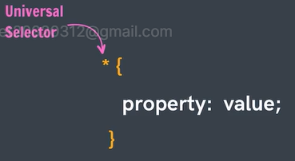
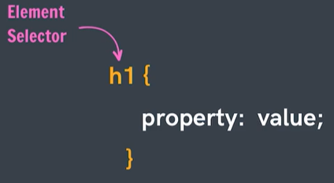
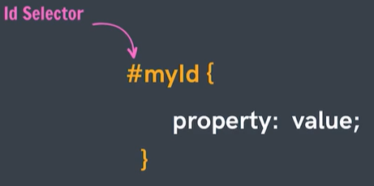
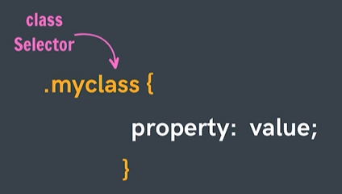
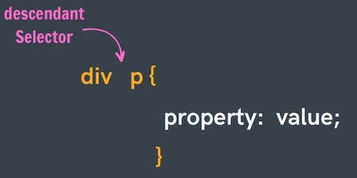
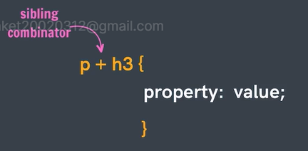
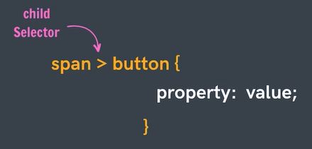
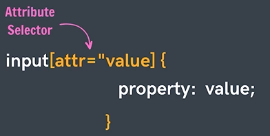

To select every thing in document.
Selects all element of same type.
Selects an element based on the value of the element's id attribute.
Selects an element based on their class attribute.
Eg :- Select all paragraph inside divs
Eg :- Heading 3 that comes immediately after paragraph.
Eg - Selects all buttons which are direct childern of spans
Selects element based on the presence or value of a given attribute
A keyword added to a selector that specifies a special state of the selected elements
A keyword added to a selector that leads lets you study a specific part of the selected elements.